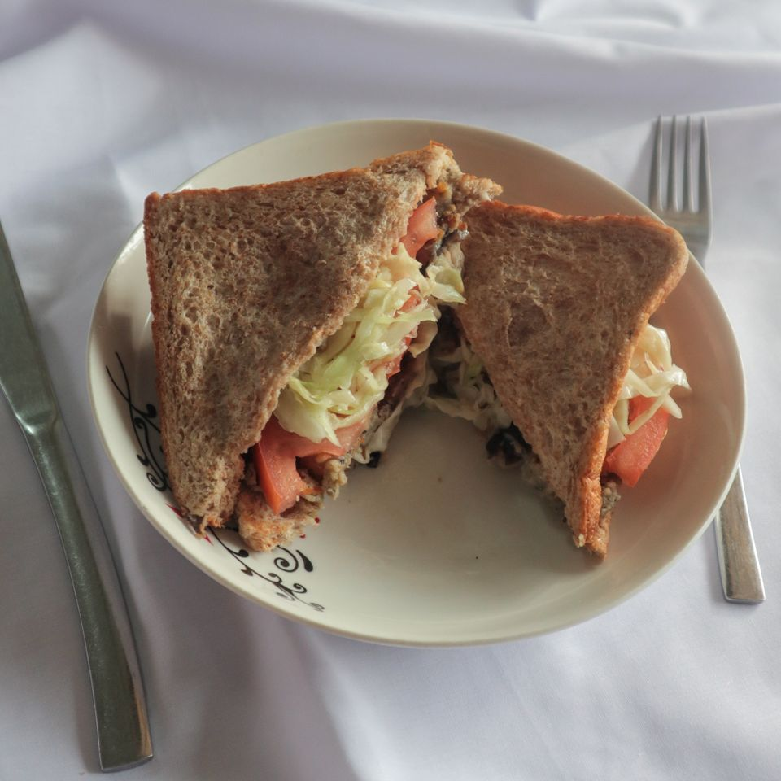

 Meatless Burger Patty 20 hours ago 3 min read Others Made your soy milk at home and have no idea how to settle the pulp? Let's transform it into some nice dishes! What is Okara?Okara (おから) is made of soybean pulp, which